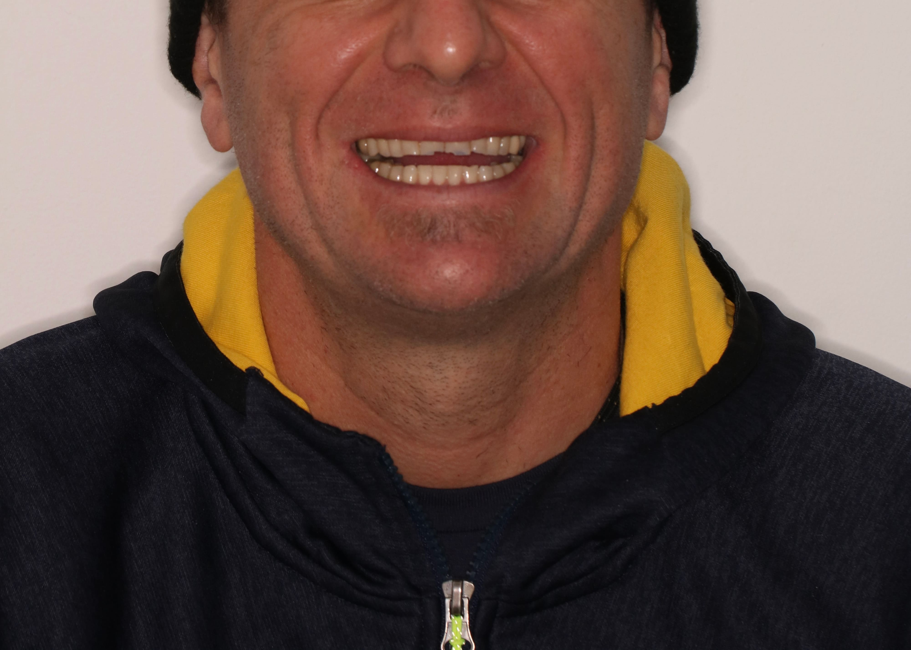
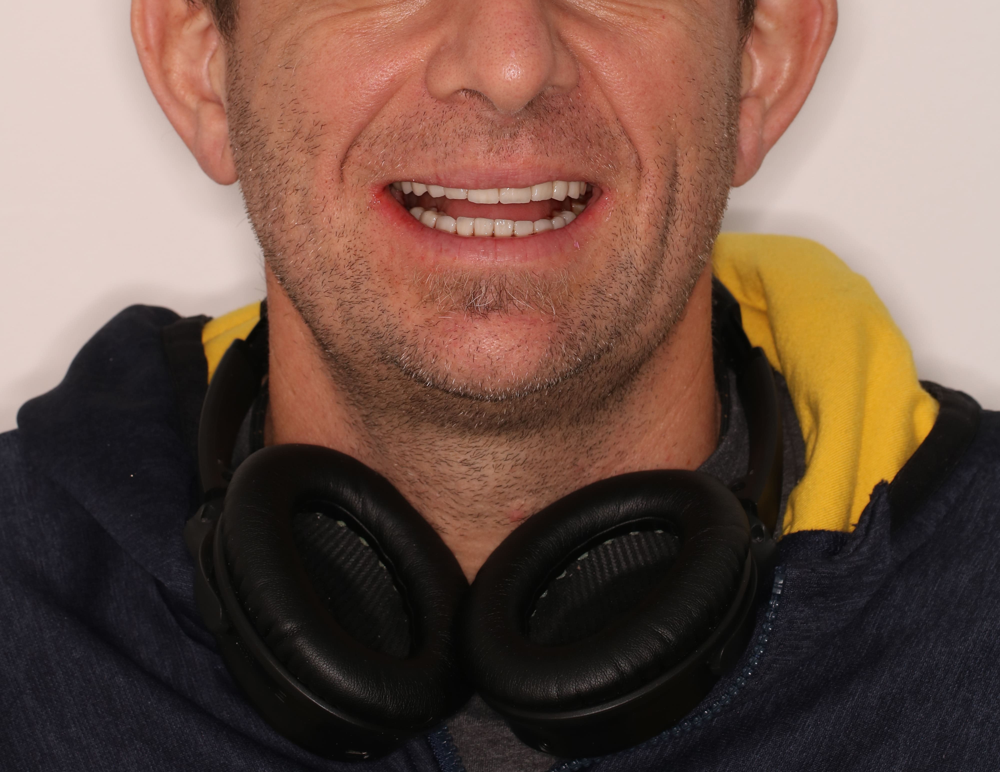

Nuestra experiencia nos respalda
Casos de éxito
Prótesis completa sobre implante
Las prótesis sobre implantes son prótesis fijas que, en vez de ser soportadas por los dientes naturales, se apoyan en los implantes dentales que te habrán sido colocados previamente (unas piezas de titanio que son insertadas a modo de raíz artificial en tus maxilares y sobre las que colocaremos la prótesis). Pueden abarcar desde unos pocos dientes hasta toda la arcada.
ContactoAntes
Después

Prótesis sobre diente
La prótesis fijas sobre dientes naturales son un tipo de restauración protésica que sirve para devolver la forma adecuada y la resistencia a dientes naturales ausentes, desgastados o deteriorados por caries. Es lo que tradicionalmente se conoce como fundas, coronas o puentes. En Inovadentix te contamos todo lo que debes saber sobre prótesis fijas sobre dientes naturales.
ContactoAntes
Después



Prótesis sobre implante carga inmediata
Este tipo de implantes se recomiendan a aquellos pacientes que sufren la pérdida de una, varias o todas las piezas dentales o si padecen un deterioro importante de las mismas. Además, el paciente debe cumplir con unos requisitos para poder someterse al procedimiento. Entre ellos, contar con una cantidad y calidad de hueso adecuado, someterse a un buen mantenimiento periodontal y cumplir también con un buen estado gingival y periodontal de los dientes adyacentes.
ContactoAntes
Después


Rehabilitaciones integrales
La rehabilitación oral consiste en un tratamiento integral mediante prótesis fijas, removibles e implantes dentales y de oclusión. Todo el proceso comienza con un diagnóstico del daño en la boca del paciente y la definición del mejor procedimiento. Este tratamiento se recomienda para pacientes con problemas muy avanzados en la boca (ya sea caries dental severa o pérdida de múltiples dientes). También es necesaria en pacientes con bruxismo del sueño severo con un desgaste muy avanzado de los dientes.
ContactoAntes
Después


Renovación de prótesis
Aunque puede variar de una persona a otra, tu prótesis dental (dentadura postiza) debería durarte entre cinco y diez años. Sin embargo, con el tiempo te puede parecer que hay que realinear o reajustar la prótesis para que tenga un mejor ajuste. Si acudes a tu odontólogo con regularidad, te podrá indicar cuándo tu prótesis necesita una reparación o cuándo tienes que cambiarla. Sin embargo, esto dependerá de tu rutina de cuidado de la prótesis y de lo bien que la mantengas.
ContactoAntes

Después